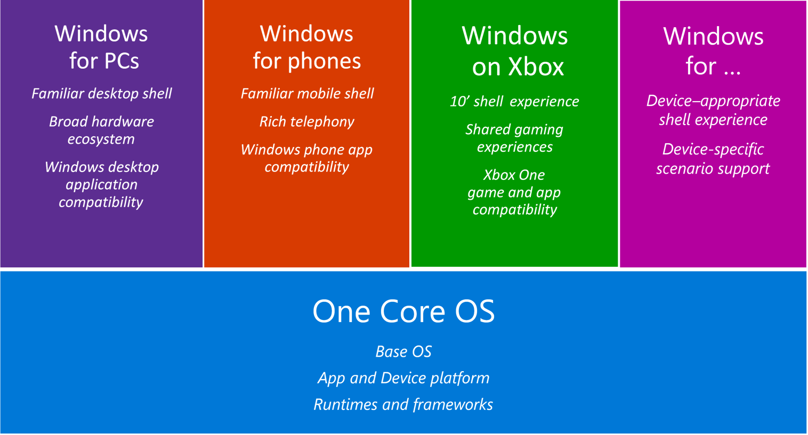

Windows
A Setup Information file (an INF file) is a plain-text file used by Windows for the installation of software and drivers. Windows 7 saves local copies of all drivers that you install in a folder called FileRepository. The full path is C:WindowsSystem32DriverStoreFileRepository.
After a configuration pass is processed, Windows Setup annotates the cached answer file to indicate that the pass has been processed. If the configuration pass is run again and the cached answer file has not been replaced or updated in the interim, the answer file settings are not processed again. Instead, Windows Setup will search for implicit Unattend.xml files that are at a lower precedence location than the cached Unattend.xml file. For example, you can install Windows with an answer file that contains Microsoft-Windows-Deployment/RunSynchronous commands in the specialize configuration pass. During installation, the specialize configuration pass runs and the RunSynchronous commands execute. After installation, run the sysprep command with the /generalize option. If there is no answer file in a higher precedence than the cached answer file or an answer file was not explicitly passed to the Sysprep tool, Setup runs the specialize configuration pass the next time that the computer boots. Because the cached answer file contains an annotation that the settings for that configuration pass were already applied, the RunSynchronous commands do not execute.